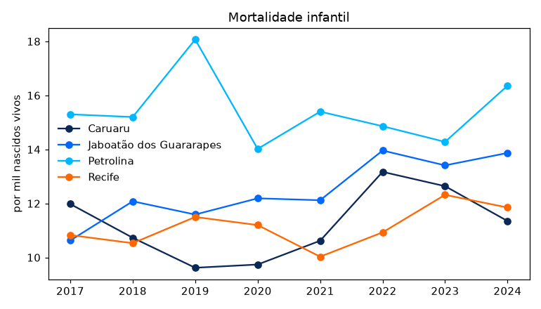
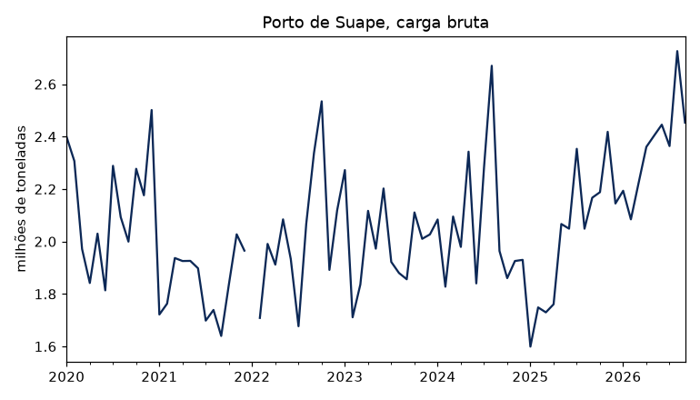
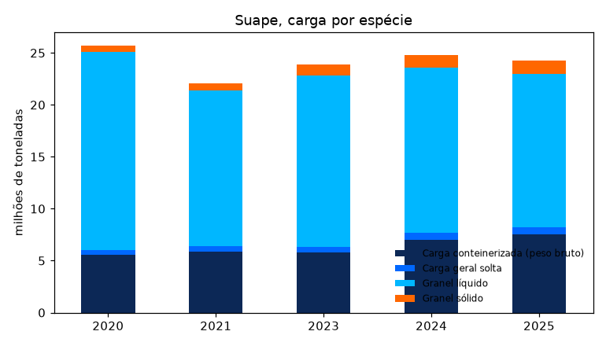

Exemplos¶
Os gráficos usam o matplotlib, que não é dependência do pacote
(pip install matplotlib). As cores são as do Observatório: o azul
institucional de Pernambuco e os acentos da paleta oficial.
Mortalidade infantil nas maiores cidades¶
Óbitos de menores de um ano por mil nascidos vivos, por município de residência:
cidades = ["2611606", "2607901", "2604106", "2611101"]
tmi = condepe.condepe_series(
"datasus_mortalidade_infantil",
"Taxa de mortalidade infantil (por mil nascidos vivos)",
code=cidades,
)
largo = tmi.pivot(index="ano", columns="nm_municipio", values="valor")
largo
nm_municipio Caruaru Jaboatão dos Guararapes Petrolina Recife
ano
2017 11.98 10.63 15.30 10.83
2018 10.73 12.08 15.20 10.53
2019 9.62 11.59 18.07 11.50
2020 9.74 12.19 14.02 11.20
2021 10.62 12.12 15.40 10.03
2022 13.17 13.96 14.86 10.93
2023 12.64 13.41 14.28 12.32
2024 11.35 13.87 16.36 11.85
ax = largo.plot(marker="o", color=['#0c2856', '#0068ff', '#00b7ff', '#ff6700'], figsize=(7, 4),
title="Mortalidade infantil")
ax.set_xlabel("")
ax.set_ylabel("por mil nascidos vivos")
ax.legend(title=None, frameon=False)
print(fig("tmi"))

Carga movimentada no Porto de Suape¶
Carga bruta mensal em Suape (Ipojuca), em milhões de toneladas. Janeiro de 2022 não foi publicado pelo porto e aparece como lacuna:
suape = condepe.condepe_series("porto_suape_carga", "Porto de Suape - Carga bruta total")
suape["data"] = pd.to_datetime(dict(year=suape["ano"], month=suape["mes"], day=1))
serie = suape.set_index("data")["valor"].asfreq("MS") / 1e6
ax = serie.plot(color="#0c2856", figsize=(7, 4), title="Porto de Suape, carga bruta")
ax.set_xlabel("")
ax.set_ylabel("milhões de toneladas")
print(fig("suape"))

Carga por espécie em cada ano com os 12 meses publicados (2022, sem janeiro, e o ano corrente ficam de fora):
especies = ["Granel líquido", "Granel sólido",
"Carga conteinerizada (peso bruto)", "Carga geral solta"]
d = condepe.condepe_series("porto_suape_carga",
["Porto de Suape - " + e for e in especies])
meses = d.groupby("ano")["mes"].nunique()
d = d[d["ano"].isin(meses[meses == 12].index)]
anual = d.pivot_table(index="ano", columns="indicador_base", values="valor",
aggfunc="sum") / 1e6
anual.columns = [c.replace("Porto de Suape - ", "") for c in anual.columns]
ax = anual.plot.bar(stacked=True, color=['#0c2856', '#0068ff', '#00b7ff', '#ff6700'], figsize=(7, 4),
title="Suape, carga por espécie", rot=0)
ax.set_xlabel("")
ax.set_ylabel("milhões de toneladas")
ax.legend(frameon=False, fontsize=8)
print(fig("suape_especies"))

IDEB das escolas municipais¶
O Índice de Desenvolvimento da Educação Básica dos anos iniciais do ensino fundamental, rede municipal, no Recife:
ideb = condepe.condepe_series(
"inep_ideb_anos_iniciais", "IDEB observado - Municipal", code="2611606"
)
ideb[["ano", "valor"]]
ano valor
0 2005 3.2
1 2007 3.8
2 2009 4.1
3 2011 4.1
4 2013 4.2
5 2015 4.6
6 2017 5.0
7 2019 5.2
8 2021 5.3
9 2023 5.5
10 2025 5.8
Todos os municípios num ano¶
Nascidos vivos por município de residência em 2024, os dez maiores, e a proporção de partos cesáreos, cruzando dois indicadores da mesma fonte:
total = "Nascidos vivos por residência - Total"
cesareo = "Nascidos vivos por residência - Parto cesáreo"
d = condepe.condepe_series("datasus_sinasc", [total, cesareo], years=2024)
w = d.pivot(index="nm_municipio", columns="indicador_base", values="valor")
w["pct_cesareo"] = 100 * w[cesareo] / w[total]
w.nlargest(10, total).round(1)
indicador_base Nascidos vivos por residência - Parto cesáreo \
nm_municipio
Recife 7988.0
Jaboatão dos Guararapes 3595.0
Petrolina 3170.0
Caruaru 3342.0
Olinda 1732.0
Paulista 1712.0
Cabo de Santo Agostinho 1278.0
Garanhuns 1174.0
Camaragibe 795.0
Vitória de Santo Antão 1050.0
indicador_base Nascidos vivos por residência - Total pct_cesareo
nm_municipio
Recife 16116.0 49.6
Jaboatão dos Guararapes 7284.0 49.4
Petrolina 6175.0 51.3
Caruaru 5285.0 63.2
Olinda 3879.0 44.7
Paulista 3284.0 52.1
Cabo de Santo Agostinho 2435.0 52.5
Garanhuns 1965.0 59.7
Camaragibe 1711.0 46.5
Vitória de Santo Antão 1622.0 64.7